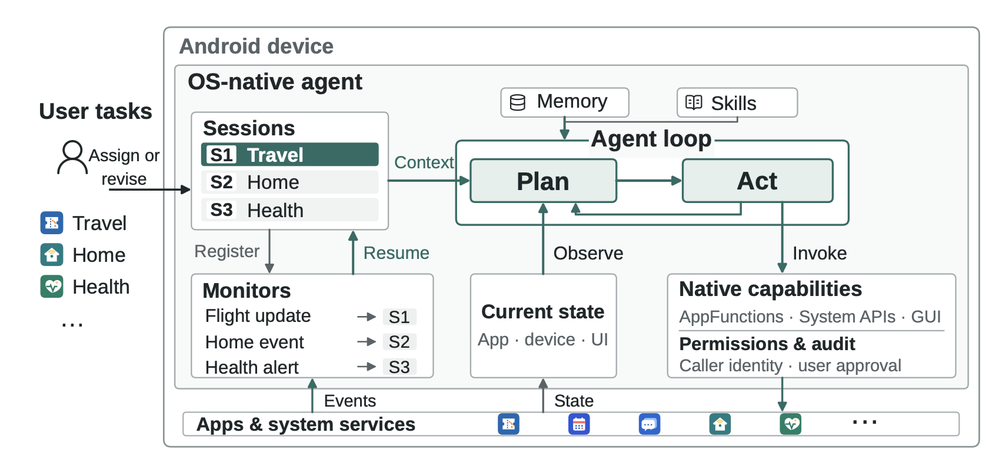
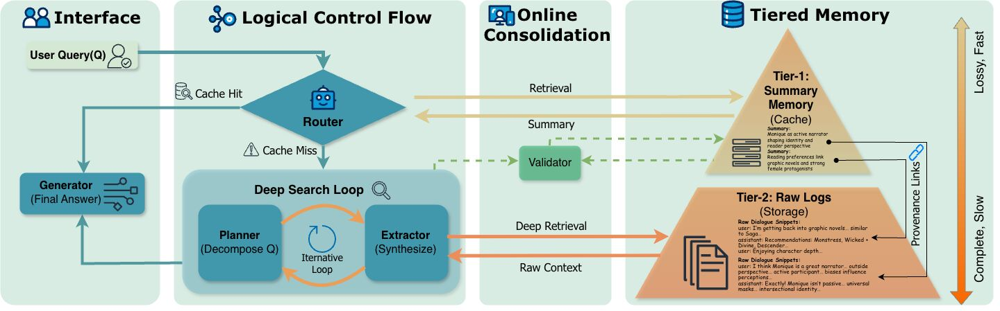
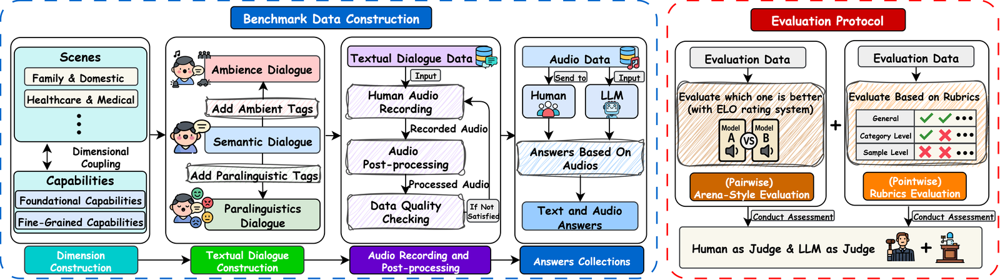

OS-native Agents: Managing User Tasks in the Dynamic Mobile World
探索智能体在动态环境中自主、主动、可靠地行动所需的操作系统支持。 将状态感知、跨应用能力调用与授权机制纳入智能体架构，并构建 DynamicWorld，以环境和用户需求变化下的持续任务管理为评测场景。
UNDERSTAND · ACT · EVOLVE
我是香港中文大学（深圳）人工智能学院的研究型硕士生，导师为王本友教授。
我的研究方向是个性化智能体（Personalized Agents）。我希望构建真正融入个人工作与生活的智能伙伴：更懂你、更主动、更能干，并在长期协作中不断成长。
更懂你（Personalization）。通过长期记忆，让智能体更好地保留和利用交互历史，理解个人偏好、习惯与需求。TierMem 是这一方向的具体探索；我也希望进一步研究智能体如何从经验与反馈中持续改进。
更主动、更能干（Proactive Agency）。研究智能体如何感知动态环境、把握行动时机，并利用操作系统与应用的能力，自主、可靠地完成真实世界中的复杂任务与协作。OS-native Agents 探索所需的系统支持，并以持续任务管理作为验证场景。
我也参与 MTalk-Bench 等多轮交互评测研究，关注如何可靠地衡量模型的交互能力。
期待和大家一起探索、一起构建，逐步走向我们想象中的 JARVIS。

探索智能体在动态环境中自主、主动、可靠地行动所需的操作系统支持。 将状态感知、跨应用能力调用与授权机制纳入智能体架构，并构建 DynamicWorld，以环境和用户需求变化下的持续任务管理为评测场景。

按需组织不同粒度的记忆，连接高层指导与具体做法。 压缩记忆提供高层概览与行动指导，原始记录保留详细信息与操作步骤；智能体根据当前任务动态选择记忆粒度，按需加载相关内容。

评估语音模型在多轮对话中理解内容、语音线索与环境声音的能力。 结合成对比较与细粒度评分，分析模型表现及不同评测方法的可靠性。
人工智能研究型硕士 · 人工智能学院
导师：王本友教授
数学与应用数学 · 理学学士